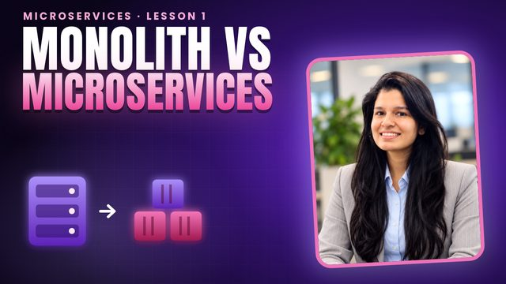
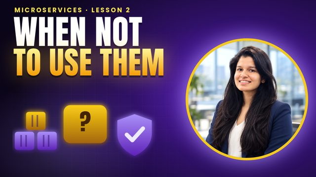
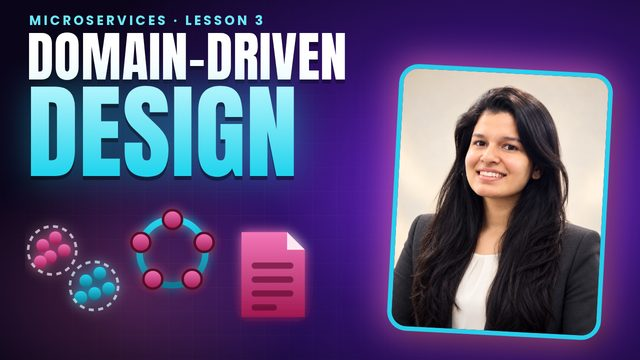
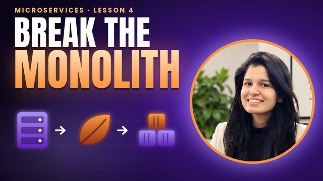
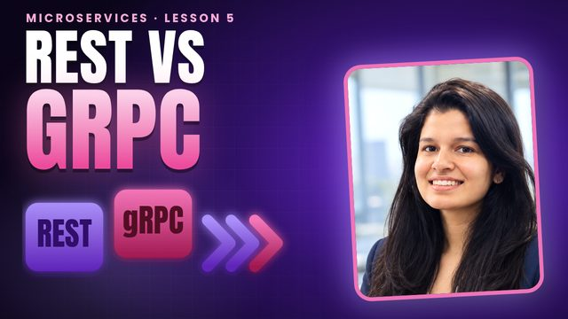
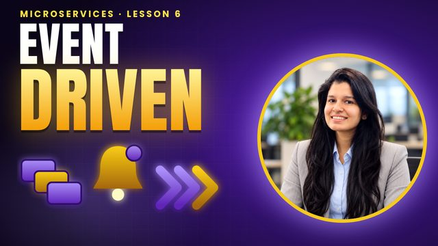
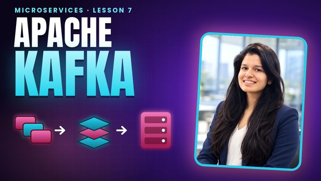
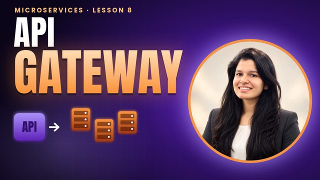
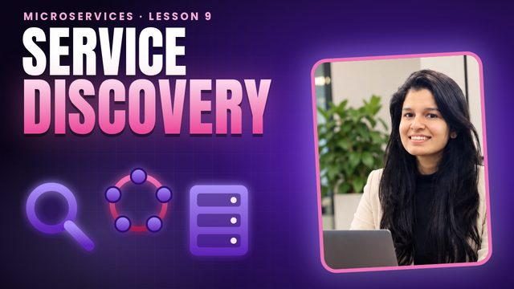
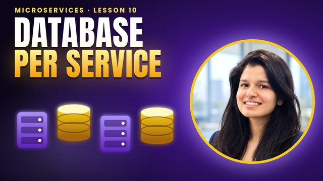

Microservices
Monolith to microservices, step by step: when not to use them, domain-driven design, the strangler fig, REST vs gRPC, events, Kafka, API gateways, service discovery and database per service.

7:43Monolith vs Microservices Explained Simply
Why do companies like Netflix and Amazon use microservices, and when should YOU avoid them? Lesson 1 of the complete Microservices Course: monolith vs microservices, explained with simple notebook-style diagrams.

6:57Microservices Characteristics & When NOT to Use Them
Why do so many teams get SLOWER after moving to microservices? Lesson 2 of the complete Microservices Course: the 9 characteristics of microservices, Conway's law, the distributed monolith trap, and 5 signs you should not use…

6:31Domain-Driven Design for Microservices: Bounded Contexts & Aggregates
How do you decide where one microservice ends and the next begins? Lesson 3 of the complete Microservices Course: Domain-Driven Design explained simply.

5:50How to Break a Monolith into Microservices: Strangler Fig Pattern
Why do big-bang rewrites fail, and how do you break a monolith safely? Lesson 4 of the complete Microservices Course: how to find service boundaries, which service to extract first, and the Strangler Fig pattern step by step,…

6:44REST vs gRPC: Synchronous Communication Between Microservices
Your checkout calls 4 services in a row. What happens when one gets slow? Lesson 5 of the complete Microservices Course: synchronous communication.

5:46Async Communication & Event-Driven Architecture
What happens to an order when the email service is down? Lesson 6 of the complete Microservices Course: asynchronous communication.

5:51Apache Kafka for Microservices: Topics, Partitions & Consumer Groups
How does Kafka handle thousands of events per second and still keep them in order? Lesson 7 of the complete Microservices Course: Apache Kafka explained simply.

4:49API Gateway Pattern & Backend for Frontend (BFF)
Why should a mobile app never call 6 microservices directly? Lesson 8 of the complete Microservices Course: the API Gateway pattern.

4:54Service Discovery & Load Balancing in Microservices
How does one microservice find another when IP addresses keep changing? Lesson 9 of the complete Microservices Course: service discovery.

5:15Database per Service & Data Ownership
Why does sharing one database quietly turn your microservices back into a monolith? Lesson 10 of the complete Microservices Course: the database per service pattern.
More lessons are added here as they go live on YouTube.
Notes are free
Create a free account to open the notes for every lesson and tick off what you have finished.